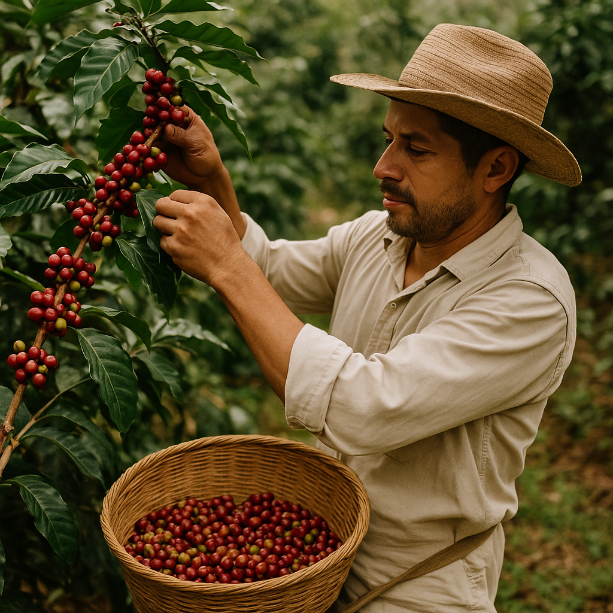
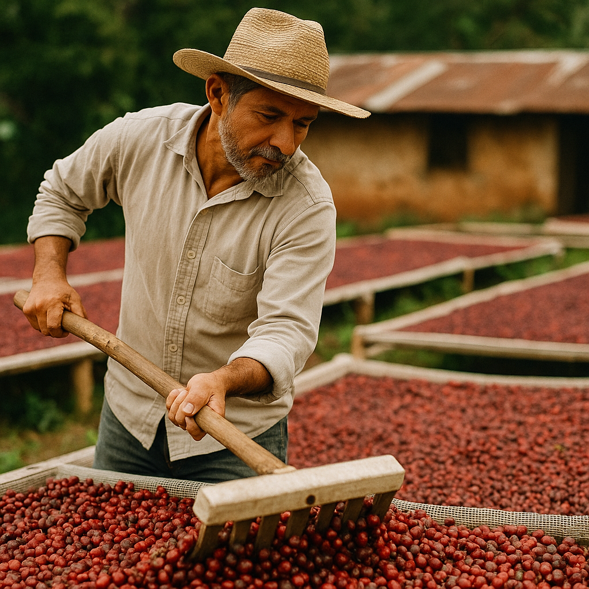
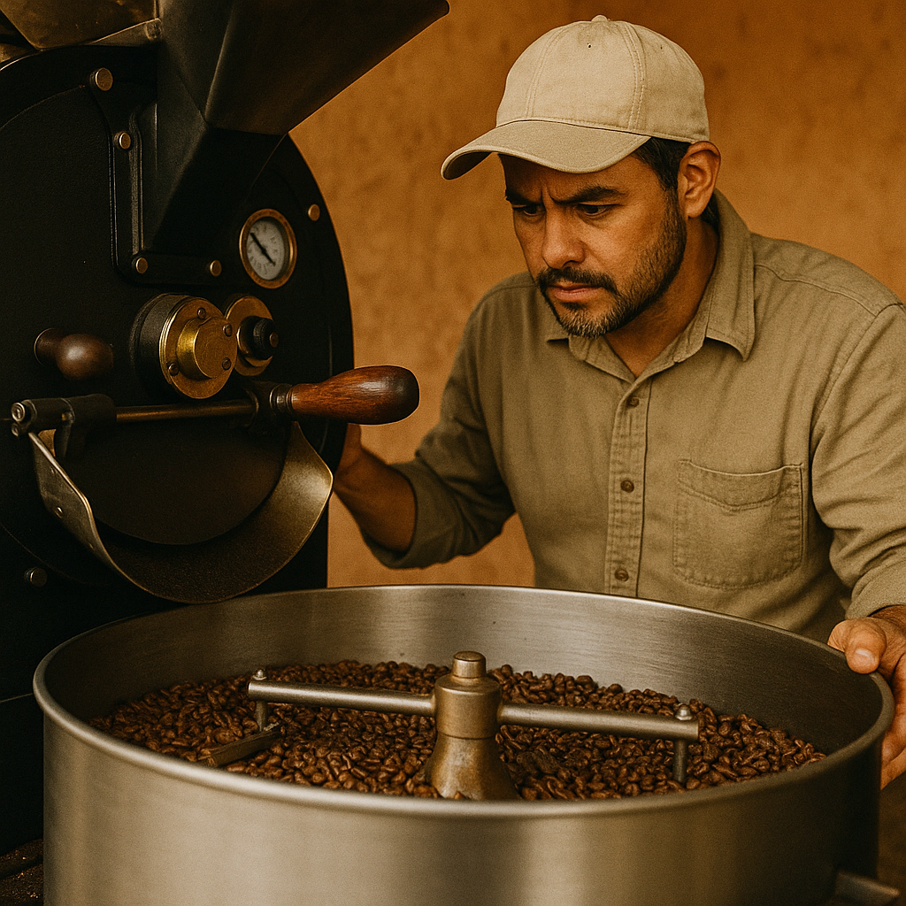

Introducción
El viaje del café desde la finca hasta la taza es un proceso apasionante que refleja tradición, esfuerzo y dedicación. Todo comienza con el cultivo en tierras de altura, donde caficultores seleccionan cuidadosamente las cerezas maduras. Luego, los granos pasan por etapas de beneficio y secado al sol, que permiten conservar sus cualidades únicas. Posteriormente, llegan al tueste, una fase clave donde se desarrollan los aromas y sabores que definirán su perfil sensorial. Finalmente, el café se transforma en una bebida que cautiva por su complejidad y autenticidad, convirtiéndose en una experiencia que honra a quienes lo cultivan y a quienes lo disfrutan.
Cultivo
El proceso de cultivo del café comienza con la siembra de variedades seleccionadas en zonas de altura y clima adecuado. A lo largo del año se cuida el suelo con abonos orgánicos, riego controlado y sombra, además de podas y control de plagas para mantener plantas sanas. Tras la floración, las cerezas maduran lentamente hasta ponerse rojas; entonces se realiza la cosecha manual, eligiendo solo los frutos en su punto óptimo. Este manejo cuidadoso en la finca es la base de un café de calidad.
Secado
El proceso de secado del café es una etapa clave para conservar la calidad del grano. Una vez recolectadas las cerezas maduras, los granos se extienden en patios o camas africanas bajo el sol, donde se remueven constantemente para lograr un secado uniforme y evitar la fermentación. Este proceso puede durar varios días, dependiendo del clima y del método empleado, hasta que los granos alcanzan el nivel de humedad ideal. Gracias a este cuidado, se preservan los aromas y sabores que caracterizan a un buen café.
Tostado
El tostado del café es el momento en que los granos verdes liberan todo su potencial aromático y de sabor. Durante este proceso, los granos se exponen a altas temperaturas en tostadoras artesanales o industriales, lo que provoca reacciones químicas que desarrollan notas dulces, afrutadas, achocolatadas o florales, según el perfil buscado. El maestro tostador controla tiempo y temperatura con precisión para resaltar las características propias de cada origen. Un buen tostado transforma los granos en café listo para ser molido y preparado, marcando la diferencia entre un café común y uno de especialidad.
Molido

El molido del café es una etapa esencial que influye directamente en el sabor final de la bebida. Una vez tostados, los granos se muelen en diferentes grosores según el método de preparación: fino para espresso, medio para V60 o Chemex y grueso para prensa francesa. Un molido adecuado permite que el agua extraiga de manera equilibrada los aromas y compuestos del café, evitando sabores amargos o planos. Por ello, se recomienda moler el café justo antes de prepararlo, garantizando frescura y una experiencia sensorial más intensa.
Preparación

La preparación del café es la etapa final donde todo el esfuerzo del cultivo, secado, tostado y molido se transforma en una bebida única. Dependiendo del método utilizado —como espresso, prensa francesa, V60 o Chemex— se logra resaltar distintos matices de aroma y sabor. La proporción entre café y agua, la temperatura y el tiempo de extracción son factores clave que determinan el resultado en la taza. Una buena preparación permite disfrutar de un café equilibrado, aromático y lleno de personalidad, que refleja el origen y el cuidado puesto en cada grano.